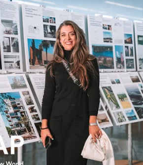
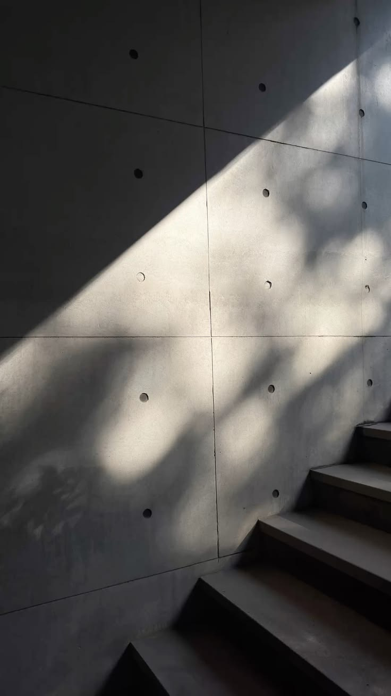

Escuchar
Entender el lugar y tu manera de vivir.
Espacios pensados para una forma singular de habitar.
Hablemos de tu proyecto
La mirada detrás del proyecto.
Me interesa una arquitectura que nazca de prestar atención: a cómo vivimos, a lo que un lugar ofrece y a esas pequeñas cosas que hacen propio un espacio.
Proyecto desde ese encuentro entre las personas y el paisaje. La luz, la materia y lo existente no llegan al final: son parte de las preguntas con las que empieza cada proyecto.
Arquitecta · Docente · Fundadora de Estudio Morton
Antes del primer dibujo, escuchamos a quien va a habitar y lo que el lugar tiene para ofrecer.
Entender el lugar y tu manera de vivir.
Explorar posibilidades con luz, materia y paisaje.
Transformar esas ideas en espacios para habitar.
Dos puntos de partida.
La misma forma de escuchar.

Un lugar para tu manera de vivir.
Para vos y quienes comparten tu vida. Una casa nueva, una reforma o ese espacio que querés transformar.
Quiero pensar mi casaConsultar por WhatsApp
Una visión que toma forma.
Para quienes ven una posibilidad en un terreno o un desarrollo. Pensemos juntos su potencial y la arquitectura que puede darle valor.
Quiero pensar mi inversiónConsultar por WhatsAppExplorá las obras y abrí cada una para conocer las ideas y decisiones detrás del proyecto.
Seleccioná una obra para conocerla.
Un proceso compartido, con etapas claras. En la primera conversación definimos qué necesitás y el alcance del trabajo.
Empezar una conversaciónConocemos el lugar, tu manera de habitar y los objetivos del proyecto. Conversamos sobre necesidades, tiempos y recursos.
Exploramos posibilidades antes de decidir. El anteproyecto permite conversar sobre los espacios, la luz y la relación con el entorno.
Convertimos esas posibilidades en un proyecto. Precisamos la organización, la materialidad y las decisiones técnicas.
Desarrollamos la documentación necesaria para hacerlo realidad. Acordamos el alcance de esta etapa y el acompañamiento que necesita la obra.
Primer premio · Edificio Ocampo · Categoría E: Producción Internacional, Obra Construida.
Segundo premio.
Segundo premio · Edificio Ocampo · Vivienda multifamiliar mayor a tres niveles.
Primer premio · Casa Suburbana · Vivienda PROCREAR.
Tercer premio · Rolling Pavilion · Diorella Fortunati, Andres Milos y Diego Valenzuela · Posgrado de Arquitectura y Tecnología.
Segundo premio · Congreso Latinoamericano de Arquitectura, Taller Integral de Arquitectura · CCCAO, tesis de Diorella Fortunati.
Cycle 5 · 2024–2025.
Best Implemented Project of Residential or Mixed-Use Estate.
Best Implemented Project of Private Residence.
Best Implemented Apartment.
Diorella Fortunati · Arquitecta Desarrolladora.
Diorella Fortunati · Destacada en Arquitecta Proyectista.
Distinción · Edificio Ocampo · Vivienda multifamiliar.
Mención · Casa Sur · Vivienda unifamiliar.
Primera mención · Simulaciones Sincrónicas · Dirección de Obras, Cátedra Robles.
Edificio Ocampo · Vivienda multifamiliar.
Selección.
Selección nacional · Sistemas Materiales · Academia e Investigación.
Casa Laguna · Colección Vivienda, n.º 2: Viviendas Exentas · Bisman Ediciones.
Curso Expresión Material.
Beca completa · Diorella Fortunati · Intercambio de Grupo de Estudio Alemania–Argentina, Rotary Internacional.
Diorella Fortunati.
Las entradas idénticas de Casa Laguna / Golden Trezzini y de In Award Nueva York se muestran una sola vez.

Mi práctica personal forma parte de un trabajo compartido. En Morton, la arquitectura y el paisaje se encuentran en proyectos que ponen en el centro la identidad de quienes habitan.
El estudio reúne el equipo, las obras y una trayectoria de exploración. Allí podés conocer ese universo con mayor profundidad.
Conocé Estudio MortonNo hace falta tener todas las respuestas. Podemos empezar por una pregunta, un lugar o una idea.
Contame qué estás imaginando. Ya sea tu casa o un proyecto de inversión, el primer paso es escucharte.